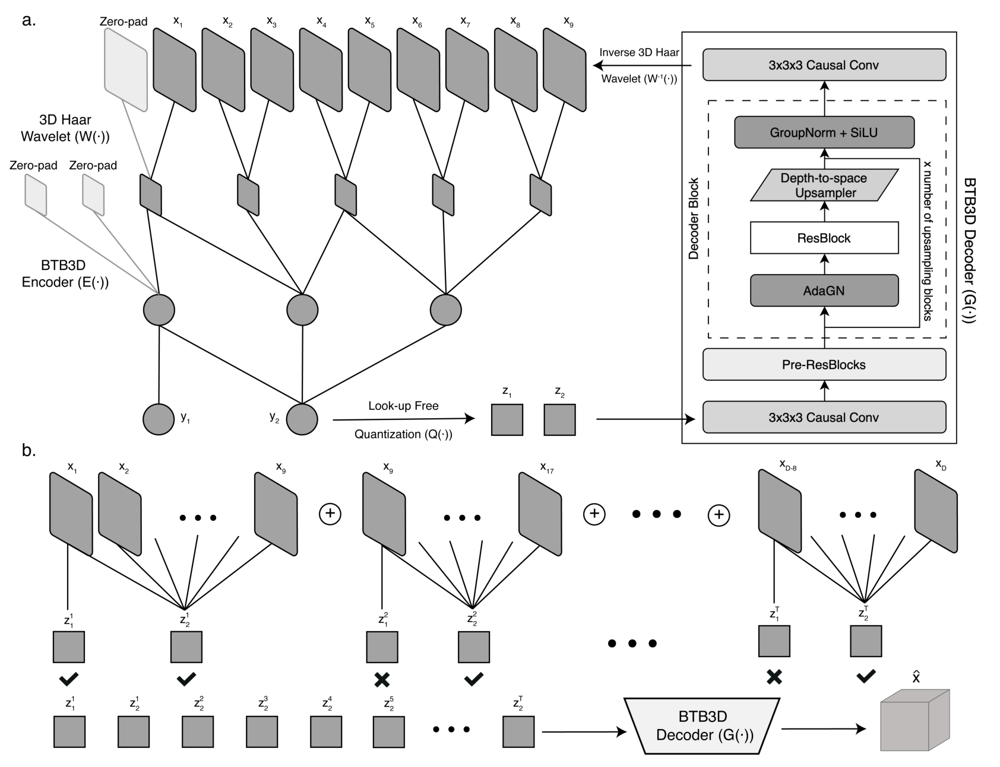
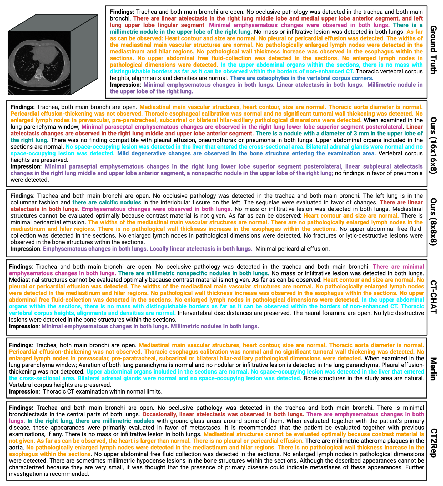
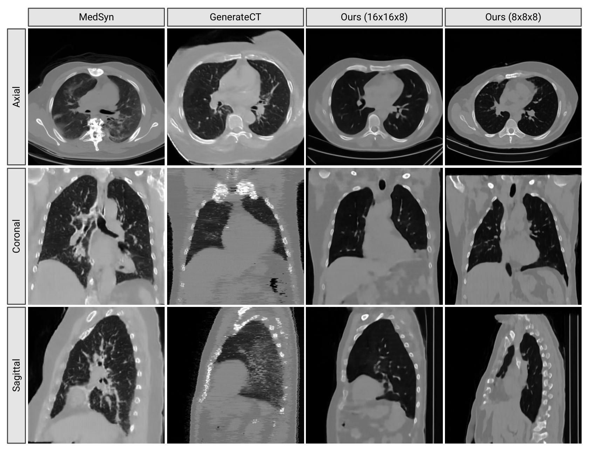
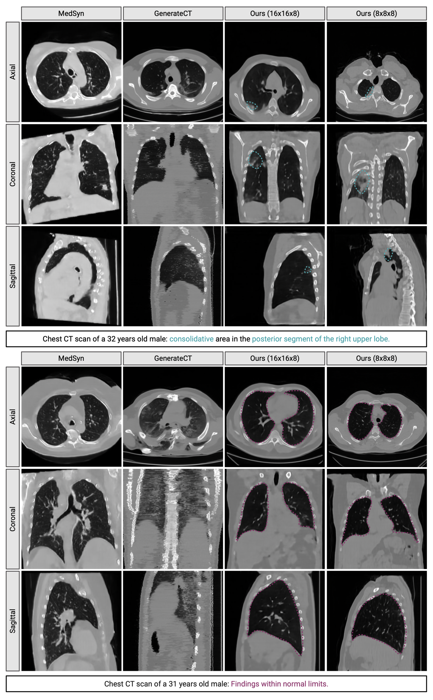
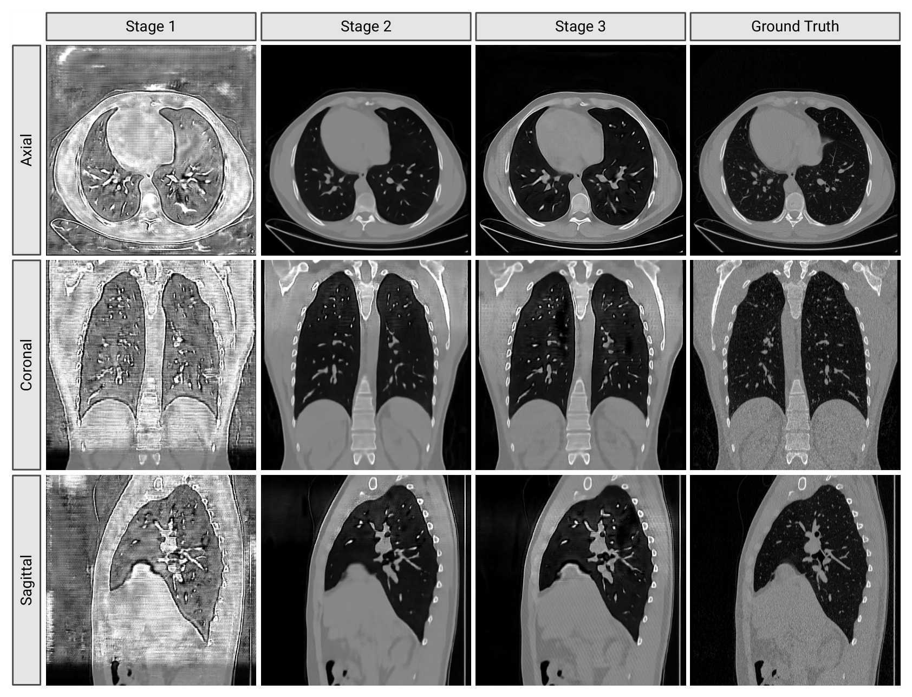

BTB3D: are weak visual tokens the real bottleneck in 3D medical VLMs?
BTB3D asks a practical question: if a 3D medical vision-language model (VLM) fails on long computed tomography (CT) volumes, is the weak link the language model or the visual tokens? The paper's answer is that the visual side is load-bearing: CT scans need compact tokens that still reconstruct fine anatomy and can extend from 9-slice training windows to volumes over 300 slices. It builds those tokens with a 3D Haar wavelet transform, strictly causal 3D convolutions, lookup-free quantization (LFQ, a binary discrete-token scheme), and a three-stage training curriculum. The evidence splits by task, and by compression rate — the 8×8×8 and 16×16×8 labels are per-axis downsampling factors, so a higher number means fewer, coarser tokens: the more compressed 16×16×8 tokenizer gives the best report-generation F1, while the less compressed 8×8×8 tokenizer gives the best text-to-CT synthesis scores. On CT-RATE, Ours-16 reaches clinical F1 0.258 against CT-CHAT at 0.184, but that F1 lead is a recall win: Ours-16's precision (0.260) is the lowest in the table, below CT-CHAT (0.450), CT2Rep (0.435), and Merlin (0.295). For text-to-CT, Ours-8 reduces mean Fréchet Inception Distance (FID) from GenerateCT's 9.512 to 2.236 and improves CT-Net Fréchet Video Distance (FVD) from 7.659 to 3.955. The caveat is important: all experiments are chest CT, no repeated-run error bars are reported, and clinical deployment is not established.
{kind=link}

1. Motivation: why move the fight to visual tokens?
A chest CT is not a long stack of unrelated pictures. A small nodule, a fissure, or an inter-slice texture can matter clinically, and the model must carry that detail through hundreds of slices before a language model can describe it. BTB3D argues that current 3D VLMs often lose the fight before the language model starts.
The paper names two pressure points. First, contrastive vision-language pretraining assumes that only matched image-text pairs are semantically aligned. In radiology, two unmatched reports can still describe the same condition in different wording, so a contrastive loss can punish clinically similar cases. Second, high-resolution 3D volumes make batch size and model capacity expensive, which weakens the vision encoder exactly where fine anatomy is needed.
Text-to-CT generation has a parallel problem. A generator needs a latent space that can decode back into an anatomically coherent 512×512×241 volume. If the latent is trained only on low-resolution volumes or cascaded 2D upsampling, the result can look plausible slice by slice while breaking across slices.
Q: What is the smallest version of the problem?
Guide: imagine the model sees only a short 9-slice window during training but must reconstruct a 241-slice scan at test time.
A: The token for a later slice must carry enough local detail to reconstruct it, but the sequence of tokens must also stay consistent over the whole scan. A token that is only globally semantic helps reports but loses fine anatomy. A token that is only local helps pixels but may not support language.
Takeaway: BTB3D's question is not "which LLM is bigger?" It is "which CT token can serve both language and generation without losing the volume?"
2. Contributions: what does BTB3D actually add?
The authors' stated contribution is a reconstruction-first tokenizer for 3D medical VLMs. It is an encoder-decoder, so the token must be useful enough to rebuild the CT, not only to align with a report. It is causal along the axial dimension, so the same machinery can process single 2D slices, short 3D subvolumes, and long volumes. It is quantized with LFQ, so tokens are discrete and compact without maintaining a learned embedding lookup table.
The second contribution is the three-stage curriculum. Stage 1 teaches local reconstruction on single slices or 9-slice subvolumes. Stage 2 uses overlapping windows and keeps only the second token from each window after the first. Stage 3 freezes the encoder and codebook, then fine-tunes only the decoder on long sequences.
The third contribution is the two-sided evaluation. Report generation tests whether the token preserves clinical semantics. Text-to-CT synthesis tests whether the same encoder-decoder can support high-fidelity 3D generation. The split result is informative: the most compressed tokens are best for reports, while less compressed tokens are best for synthesis.
Q: What is novel here: wavelets, causality, quantization, or training?
Guide: none of those components alone is new enough to carry the paper. The contribution is the way they are coupled to the 3D medical bottleneck.
A: Wavelets lower the input burden while keeping frequency bands. Causal convolutions let short-window training transfer to long axial sequences. LFQ keeps the latent discrete and cheap. The three-stage curriculum makes the short-window approximation usable for whole CT volumes.
Takeaway: BTB3D is best read as a tokenizer systems paper, not as a new report-generation head.
3. Data: chest CT first, with one external report benchmark
CT-RATE is the main dataset. The paper uses 25,692 chest CT scans from 21,304 patients, with 20,000 patients for training and 1,304 for testing. Volumes are converted to Hounsfield Units (HU, the standard CT intensity scale) and clipped to [-1000, 1000]. For Stage 3 and downstream report generation, CTs are resampled to 0.75×0.75×1.5 mm and cropped or padded to 512×512×241.
RadChestCT is the external validation dataset for report generation. It provides multi-label annotations but no free-text reports, so Table 2 reports only clinical labels: F1, precision, and recall. F1 is the harmonic mean of precision and recall; precision asks how many predicted positives are correct, while recall asks how many true positives are found.
The report-generation setup follows CT-CHAT: tokens from BTB3D are mapped into the input space of LLaMA-3.1-8B, a large language model (LLM), which autoregressively writes the report. The text-to-CT setup uses CT-RATE prompts of the form Chest CT scan of a {age}-year-old {sex}: {impression}.
What is not evaluated
The paper does not test brain MRI, abdominal CT, positron emission tomography, whole-body imaging, or non-radiology medical text. It states that the framework is designed for 2D and 3D inputs, but the experiments are chest-CT experiments.
4. Pipeline: how does a CT become a token sequence?
The pipeline is: CT volume, 3D Haar wavelet transform, causal 3D convolutional encoder, LFQ discrete token map, causal decoder, inverse Haar wavelet transform, reconstructed CT. The downstream branches reuse the same token family. Report generation projects tokens into LLaMA-3.1-8B. Text-to-CT generation trains a transformer with cross-attention and then decodes generated latent tokens back into CT space.
Figure 1 is the data-flow diagram to keep in mind. Stage 1 compresses a 9-slice input in the wavelet domain, applies two stride-2 temporal convolutions, and reconstructs through a symmetric causal decoder. Stage 2 changes the sequence interface: overlapping 9-slice windows share boundary slices, and only the token that has seen the full window is kept after the first window.
The reason for the overlap is easier to see on a toy scan. A 9-slice window produces two axial tokens after temporal downsampling. If window 1 covers slices 1-9 and window 2 covers slices 9-17, the first token of window 2 mostly repeats the boundary slice. The second token has seen the full new window, so BTB3D keeps it and discards the boundary token.
Q: Why not run the whole CT through the model once?
Guide: one-shot inference is supported, but the paper says long-sequence quality may degrade.
A: The model is trained under memory limits on short or partial sequences. Tiled inference mirrors the Stage 2 training pattern, so the decoder sees the same kind of token sequence at test time that it learned during training.
Takeaway: The overlap is not a cosmetic crop trick. It is the bridge between short training windows and long CT volumes.
5. Method: what makes the token frequency-aware, causal, and discrete?
5.1 Haar wavelets: compress before learning
Given a CT volume \(x \in \mathbb{R}^{D \times H \times W}\), BTB3D applies a 3D Haar wavelet transform \(W(\cdot)\). The result has half the resolution on each axis and eight channels, one low-frequency channel and seven high-frequency channels:
How to read it: each non-overlapping \(2 \times 2 \times 2\) voxel block becomes eight frequency coefficients. The spatial volume shrinks by a factor of 8, but the channel count grows from 1 to 8, so the representation keeps coarse and fine anatomical bands while reducing the tensor size handled by the encoder.
5.2 Causal 3D convolutions: make 2D and 3D share one rule
The encoder uses factorized 3D convolutions: a \(1 \times k \times k\) spatial convolution for sagittal-coronal processing, followed by a \(k \times 1 \times 1\) temporal convolution along the axial direction. The temporal convolution is padded only with past slices: \((k-1)\) zero slices are prepended, and no future slices are appended. Therefore the token at axial index \(t\) can depend on slices \(\leq t\), but not on later slices.
This is the paper's unification move. A single slice is just a length-1 sequence. A short subvolume is a short sequence. A long CT is a long sequence processed by the same causal rule.
5.3 LFQ: turn features into binary discrete codes
The encoder output \(y = E(W(x))\) is binarized dimension by dimension. If the token dimension is \(d\), LFQ has \(K = 2^d\) possible codes. Each feature vector becomes \(b \in \{-1, 1\}^d\), and those binary values are packed into token integers:
The paper uses token dimension 18, so the codebook size is 262,144. The point of LFQ is practical: it avoids a learned lookup table during training and inference, which helps speed and memory on large 3D volumes. The paper also adds an entropy regularization term \(L_{\mathrm{entropy}}\) to encourage broad code usage and avoid code collapse.
5.4 Losses: reconstruction is the anchor
The reconstruction loss directly asks the decoder to recover the CT volume:
How to read it: \(x\) is the input CT, \(\hat{x}\) is the reconstruction, and the \(L_1\) norm penalizes absolute voxel error. The authors choose \(L_1\) because it tends to preserve sharper detail than \(L_2\) in reconstruction tasks.
The adversarial loss pushes reconstructions toward realistic CT volumes:
Here \(D\) is a 3D discriminator trained to distinguish real CTs from generated CTs. The paper applies this supervision in the CT domain, not the wavelet domain.
The quantization loss enforces commitment to the discrete representation:
Here \(e\) is the discrete embedding or binary-quantized value, and \(\mathrm{sg}[\cdot]\) is the stop-gradient operator. The first term updates the discrete target toward the encoder output. The second term pushes the encoder output to commit to that target.
The full loss is:
The paper explicitly omits perceptual losses such as VGG features because natural RGB-image features do not match grayscale medical CT, and prior work has found that such losses can degrade medical reconstruction.
5.5 Three stages: short windows first, long consistency later
Stage 1 optimizes the encoder, quantizer, and decoder on single 2D slices or 9-slice subvolumes:
Stage 2 uses overlapping temporal tiling. The paper writes the token sequence as:
The number of windows is \(T=\lfloor(D-1)/8\rfloor\), and the final latent sequence is:
Stage 3 freezes the encoder \(E\) and the codebook, then fine-tunes only the decoder parameters \(\theta_G\):
At inference, BTB3D supports one-shot reconstruction:
and tiled inference:
Q: Why does reconstruction pretraining help both reports and generation?
Guide: reports need semantics, but generation needs pixels. A useful shared token has to carry both enough anatomy to decode and enough global signal for language.
A: Reconstruction makes the token pay for lost anatomy. LFQ makes that token compact. The report branch then learns to read clinical meaning from the token, while the generation branch learns to sample in the same decodable latent space.
Takeaway: The method couples understanding and generation by forcing both to pass through a reconstructable CT token.
6. Training: what resources and hyperparameters are disclosed?
The paper gives hardware counts, batch sizes, optimizers, and training schedules. It does not report wall-clock training time or total GPU-hours, so those costs should not be inferred as paper-disclosed numbers.
| Experiment family | Disclosed setup | How to read it | Not stated in the paper |
|---|---|---|---|
| Tokenizer reconstruction | 64 NVIDIA H100 GPUs; distributed data parallel plus mixed precision; Stage 1 batch 8 for 9-slice subvolumes and 40 for single slices; Stages 2 and 3 batch 1 with 201 and 241 slices; Adam with learning rate 1e-5, \(\beta_2=0.99\), \(\epsilon=1e-8\); gradient clipping threshold 0.5; Stage 1 150k iterations, Stage 2 60k, Stage 3 50k. | Stage 1 learns local structure, Stage 2 learns overlapping long-sequence tokens, and Stage 3 refines only the decoder. The discriminator is reinitialized at each stage. | Wall-clock time and total GPU-hours. |
| Radiology report generation | Tokens are projected into LLaMA-3.1-8B; 40,000 iterations; DeepSpeed ZeRO-3; 40 NVIDIA H100 GPUs; AdamW learning rate 2e-5; warm-up ratio 0.03; one sample per GPU for effective global batch size 40; LoRA \(r=64,\alpha=128\) for 8×8×8 and \(r=128,\alpha=256\) for 16×16×8. | The paper keeps the LLM and CT-CHAT setup fixed to isolate the tokenization change. | Wall-clock time and total GPU-hours. |
| Text-to-CT generation | 12-layer transformer; hidden size 1024; 16 heads; cross-attention; flow matching loss; [7,7,7] windowed self-attention; [2,2,2] patching; T5v1.1-base prompt encoder; 16 H100 GPUs; 1500 epochs; AdamW learning rate 1e-4; batch size 4 for 8×8×8 and 8 for 16×16×8. | This is the branch that samples CT volumes from clinical prompts and decodes them through the BTB3D decoder. | Wall-clock time and total GPU-hours. |
Q: Is this reproducible from the paper alone?
Guide: architecture, splits, core hyperparameters, and hardware are given, but full runtime accounting is not.
A: The experimental recipe is unusually specific for a 3D medical paper, but the total compute bill is incomplete. A reproducer can see the GPU type, GPU count, optimizer, batch sizes, and iteration counts, yet cannot recover wall-clock time from the PDF.
Takeaway: The reproduction barrier is high, and the missing number is time, not the broad training setup.
7. Experiments: which metrics actually move?
The main evidence has two independent routes. Report generation asks whether the tokens preserve clinical semantics well enough for an LLM to produce findings. Text-to-CT generation asks whether the same token space can decode realistic, anatomically coherent CT volumes.
7.1 External clinical labels on RadChestCT
| Model | F1 ↑ | Precision ↑ | Recall ↑ |
|---|---|---|---|
| CT2Rep | 0.133 | 0.299 | 0.139 |
| Merlin | 0.182 | 0.271 | 0.149 |
| CT-CHAT | 0.182 | 0.382 | 0.171 |
| Ours-8 | 0.192 | 0.269 | 0.165 |
| Ours-16 | 0.266 | 0.272 | 0.329 |
How to read Table 2: Ours-16 wins F1 at 0.266, a 46.2% relative gain over the tied-best baselines Merlin and CT-CHAT at 0.182 — but the gain is recall: Ours-16's recall (0.329) nearly doubles CT-CHAT's (0.171), while CT-CHAT keeps the precision lead (0.382 vs 0.272). It also wins recall at 0.329. It does not win precision: CT-CHAT has 0.382 and CT2Rep has 0.299, so the gain is driven by finding more positives, not by being the most conservative predictor.
7.2 CT-RATE report generation
| Model | F1 ↑ | P ↑ | R ↑ | CRG ↑ | B1 ↑ | B2 ↑ | B3 ↑ | B4 ↑ | Bmean ↑ | M ↑ |
|---|---|---|---|---|---|---|---|---|---|---|
| CT2Rep | 0.160 | 0.435 | 0.128 | 0.359 | 0.372 | 0.292 | 0.243 | 0.213 | 0.280 | 0.197 |
| Merlin | 0.160 | 0.295 | 0.112 | 0.352 | 0.231 | 0.163 | 0.124 | 0.099 | 0.154 | 0.148 |
| CT-CHAT | 0.184 | 0.450 | 0.158 | 0.368 | 0.373 | 0.284 | 0.231 | 0.198 | 0.272 | 0.215 |
| Ours-8 | 0.187 | 0.260 | 0.150 | 0.357 | 0.411 | 0.307 | 0.245 | 0.215 | 0.295 | 0.220 |
| Ours-16 | 0.258 | 0.260 | 0.260 | 0.370 | 0.439 | 0.320 | 0.248 | 0.213 | 0.305 | 0.223 |
How to read Table 3: Ours-16 wins F1, recall, CRG, BLEU-1, BLEU-2, BLEU-3, BLEU-mean, and METEOR. It does not win precision, where CT-CHAT reaches 0.450 and CT2Rep reaches 0.435. BLEU-4 is effectively a tiny tie region without error bars: Ours-8 is 0.215, while Ours-16 and CT2Rep are 0.213.
{kind=link}

7.3 Text-to-CT generation
| Model | FID Axial ↓ | FID Sagittal ↓ | FID Coronal ↓ | FID Mean ↓ | FVD CT-Net ↓ | FVD I3D ↓ | CLIP Text-Img ↑ | CLIP Img-Img ↑ |
|---|---|---|---|---|---|---|---|---|
| GenerateCT | 10.416 | 10.365 | 7.754 | 9.512 | 7.659 | 1512.5 | 23.625 | 84.287 |
| MedSyn | 14.963 | 12.115 | 10.698 | 12.592 | 13.927 | 725.81 | 23.571 | 84.153 |
| Ours-8 | 2.479 | 2.166 | 2.062 | 2.236 | 3.955 | 325.51 | 24.270 | 88.352 |
| Ours-16 | 7.077 | 4.226 | 3.729 | 5.011 | 4.020 | 429.34 | 23.322 | 84.957 |
How to read Table 4: Ours-8 is the clean winner on every listed metric. Against GenerateCT, mean FID falls from 9.512 to 2.236, a 76.5% reduction, and CT-Net FVD falls from 7.659 to 3.955, a 48.4% reduction. Ours-16 still improves FID, FVD, and image-image CLIP over GenerateCT and MedSyn, but it does not beat them on text-image CLIP; its 23.322 is below GenerateCT's 23.625 and MedSyn's 23.571.
{kind=link}

{kind=link}

7.4 Abnormality-level report results
The supplementary tables are useful because they prevent a single mean from hiding which abnormalities drive the win. Table 5 is CT-RATE, and Table 6 is RadChestCT.
| Abnormality | Ratio | Ours-16 | Ours-8 | CT-CHAT | Merlin | CT2Rep |
|---|---|---|---|---|---|---|
| Medical material | 0.103 | 0.142 | 0.120 | 0.006 | 0.057 | 0.000 |
| Arterial wall calcification | 0.285 | 0.414 | 0.273 | 0.451 | 0.262 | 0.322 |
| Cardiomegaly | 0.107 | 0.305 | 0.207 | 0.123 | 0.176 | 0.013 |
| Pericardial effusion | 0.074 | 0.095 | 0.095 | 0.009 | 0.060 | 0.000 |
| Coronary artery wall calc. | 0.252 | 0.403 | 0.260 | 0.412 | 0.235 | 0.335 |
| Hiatal hernia | 0.137 | 0.164 | 0.118 | 0.207 | 0.110 | 0.074 |
| Lymphadenopathy | 0.260 | 0.358 | 0.209 | 0.069 | 0.227 | 0.013 |
| Emphysema | 0.197 | 0.196 | 0.155 | 0.391 | 0.216 | 0.198 |
| Atelectasis | 0.235 | 0.269 | 0.242 | 0.341 | 0.199 | 0.323 |
| Lung nodule | 0.448 | 0.427 | 0.397 | 0.443 | 0.290 | 0.029 |
| Lung opacity | 0.390 | 0.408 | 0.382 | 0.266 | 0.312 | 0.557 |
| Pulmonary fibrotic sequela | 0.273 | 0.318 | 0.211 | 0.069 | 0.117 | 0.104 |
| Pleural effusion | 0.124 | 0.308 | 0.199 | 0.173 | 0.183 | 0.341 |
| Mosaic attenuation pattern | 0.083 | 0.183 | 0.094 | 0.064 | 0.076 | 0.198 |
| Peribronchial thickening | 0.117 | 0.125 | 0.043 | 0.000 | 0.054 | 0.099 |
| Consolidation | 0.191 | 0.259 | 0.185 | 0.120 | 0.174 | 0.236 |
| Bronchiectasis | 0.109 | 0.126 | 0.094 | 0.091 | 0.075 | 0.013 |
| Interlobular septal thick. | 0.082 | 0.135 | 0.087 | 0.075 | 0.065 | 0.032 |
| Mean | 0.193 | 0.258 | 0.187 | 0.184 | 0.160 | 0.160 |
How to read Table 5: the mean favors Ours-16, but the per-abnormality story is mixed. CT-CHAT beats Ours-16 on arterial wall calcification, coronary artery wall calcification, hiatal hernia, emphysema, atelectasis, and lung nodule. CT2Rep beats it on lung opacity, pleural effusion, and mosaic attenuation pattern.
| Abnormality | Ratio | Ours-16 | Ours-8 | CT-CHAT | Merlin | CT2Rep |
|---|---|---|---|---|---|---|
| Medical material | 0.327 | 0.235 | 0.154 | 0.000 | 0.107 | 0.000 |
| Calcification | 0.706 | 0.671 | 0.406 | 0.567 | 0.359 | 0.434 |
| Cardiomegaly | 0.109 | 0.187 | 0.151 | 0.181 | 0.031 | 0.010 |
| Pericardial effusion | 0.155 | 0.193 | 0.101 | 0.007 | 0.047 | 0.089 |
| Hiatal hernia | 0.117 | 0.149 | 0.087 | 0.149 | 0.136 | 0.173 |
| Lymphadenopathy | 0.165 | 0.252 | 0.227 | 0.121 | 0.176 | 0.000 |
| Emphysema | 0.273 | 0.201 | 0.172 | 0.412 | 0.242 | 0.142 |
| Atelectasis | 0.298 | 0.350 | 0.265 | 0.387 | 0.194 | 0.153 |
| Lung nodule | 0.802 | 0.424 | 0.408 | 0.721 | 0.495 | 0.068 |
| Lung opacity | 0.539 | 0.542 | 0.389 | 0.140 | 0.394 | 0.560 |
| Pulmonary fibrotic sequela | 0.132 | 0.204 | 0.139 | 0.026 | 0.174 | 0.157 |
| Pleural effusion | 0.200 | 0.290 | 0.199 | 0.043 | 0.135 | 0.032 |
| Peribronchial thickening | 0.085 | 0.117 | 0.064 | 0.000 | 0.095 | 0.039 |
| Consolidation | 0.139 | 0.217 | 0.145 | 0.108 | 0.149 | 0.264 |
| Bronchiectasis | 0.158 | 0.128 | 0.084 | 0.034 | 0.122 | 0.000 |
| Interlobular septal thick. | 0.069 | 0.091 | 0.075 | 0.008 | 0.057 | 0.000 |
| Mean | 0.267 | 0.266 | 0.192 | 0.182 | 0.182 | 0.133 |
How to read Table 6: Ours-16 wins the mean and 10 of 16 abnormality rows. CT-CHAT still beats it on emphysema, atelectasis, and lung nodule, and CT2Rep beats it on hiatal hernia, lung opacity, and consolidation. The external result is strong, but not uniform across findings.
Q: Do the two downstream tasks support the same mechanism?
Guide: reports and text-to-CT stress different properties of the token.
A: Yes, but with different compression preferences. Reports benefit from the compact 16×16×8 token because it is more semantic and cheaper to feed to the LLM. CT generation benefits from the 8×8×8 token because it keeps more spatial detail for decoding.
Takeaway: The cross-task result supports the tokenizer thesis, but it also says compression rate is a task choice, not a universal constant.
8. Ablations: where does the staged curriculum pay off?
The cleanest ablation is reconstruction across the three training stages. It tests the exact mechanism the method depends on: short-window training alone should not be enough, overlapping tiling should make the largest jump, and decoder-only refinement should sharpen the result after the long-sequence interface is learned.
{kind=link}

| Stage | C. Rate | PSNR ↑ | SSIM ↑ | MSE ↓ |
|---|---|---|---|---|
| Stage 1 | 8×8×8 | 9.350 | 0.206 | 0.117 |
| Stage 2 | 8×8×8 | 23.980 | 0.697 | 0.005 |
| Stage 3 | 8×8×8 | 28.166 | 0.760 | 0.001 |
| Stage 1 | 16×16×8 | 11.067 | 0.353 | 0.079 |
| Stage 2 | 16×16×8 | 23.808 | 0.700 | 0.005 |
| Stage 3 | 16×16×8 | 26.750 | 0.749 | 0.002 |
How to read Table 1: Stage 2 gives the largest jump for both variants, but the size is not identical. For 8×8×8, PSNR rises by 14.630 dB, SSIM rises from 0.206 to 0.697, and MSE falls from 0.117 to 0.005. For 16×16×8, PSNR rises by 12.741 dB, SSIM rises from 0.353 to 0.700, and MSE falls from 0.079 to 0.005. Stage 3 then adds smaller but consistent gains.

Q: Why is the biggest gain Stage 2, not Stage 3?
Guide: Stage 3 only fine-tunes the decoder. Stage 2 changes the long-sequence tokenization pattern.
A: Stage 2 teaches the model how overlapping short windows become one long latent sequence. Once that interface works, Stage 3 can sharpen the decoder. It cannot create the long-sequence interface by itself.
Takeaway: The staged curriculum matters because it changes the training-inference match, not just because it trains longer.
9. Limitations: where the claim should stop
| Boundary | Paper evidence | How to read it |
|---|---|---|
| Clinical scope | Experiments use 3D chest CT from CT-RATE and RadChestCT. | The paper does not validate brain MRI, abdominal CT, PET, whole-body imaging, or other anatomies. |
| Clinical reasoning | The appendix says BTB3D does not explicitly model clinical reasoning or uncertainty. | The method improves tokenization and generation metrics, not end-to-end clinical decision-making. |
| 2D/3D transfer claim | The framework supports 2D and 3D modes, but the appendix says the experiments used 2D slices extracted from 3D CT-RATE volumes for fairness with baselines. | The design is transfer-friendly, but cross-dataset 2D-to-3D transfer is not demonstrated. |
| Statistical significance | The NeurIPS checklist says repeated runs, error bars, confidence intervals, and statistical tests are not reported. | Small gaps such as BLEU-4 0.215 versus 0.213 should not be treated as decisive. |
| Precision trade-off in reports | Table 3 shows Ours-16 precision 0.260, while CT-CHAT is 0.450 and CT2Rep is 0.435. | The report-generation gain is mainly recall and F1, not best precision. |
| Compression trade-off | Ours-16 is best for report F1, while Ours-8 is best for text-to-CT metrics. | There is no single best compression rate across tasks. |
| Compute access | The disclosed training uses 64, 40, and 16 H100-GPU setups across experiment families. | Reproduction is expensive, and the paper does not provide wall-clock time or total GPU-hours. |
| Deployment and safety | The appendix calls for expert reader studies or prospective clinical trials and discusses misuse risks for synthetic CT. | The paper supports research progress, not autonomous clinical reporting or unrestricted synthetic-data deployment. |
Q: What is the most likely overstatement?
Guide: separate the paper's measured chest-CT benchmarks from broader medical-AI claims.
A: "BTB3D solves 3D medical VLMs." The supported claim is narrower: on chest CT, a reconstructable causal tokenizer improves report-generation F1 and text-to-CT fidelity against the listed baselines, with different compression rates preferred by the two tasks.
Takeaway: The paper is strongest as evidence that token quality is a bottleneck; it is not evidence that clinical deployment or cross-modality generalization is solved.
10. Summary: the useful mental model
In one sentence: BTB3D makes the CT token do more work: it must be compact enough for a language model, faithful enough to reconstruct anatomy, and structured enough to scale from 9-slice windows to long volumes.
Three takeaways
- Reconstruction is the pressure test. A token that can decode a high-resolution CT is less likely to throw away subtle anatomy before the LLM sees it.
- The Stage 2 interface is the key mechanism. Overlapping temporal tiling is where the model learns to turn short-window tokens into a long-volume sequence.
- The best compression rate depends on the job. Ours-16 is best for report F1, while Ours-8 is best for text-to-CT FID, FVD, and CLIP metrics.
A good reading path through the paper is: start with Figure 1 and Eqs. 6-12 to understand the tiling interface, read Table 1 to see whether it works, then read Tables 2-4 to separate the report and generation regimes.
References and figure provenance
- Ibrahim Ethem Hamamci*, Sezgin Er*, Suprosanna Shit*, Hadrien Reynaud, Dong Yang, Pengfei Guo, Marc Edgar, Daguang Xu, Bernhard Kainz, Bjoern Menze. Better Tokens for Better 3D: Advancing Vision-Language Modeling in 3D Medical Imaging. arXiv:2510.20639v1 [cs.CV], 23 Oct 2025; 39th Conference on Neural Information Processing Systems (NeurIPS 2025). The paper marks Hamamci, Er, and Shit as equal contributors.
- All equations, tables, dataset sizes, training settings, limitations, and numerical comparisons in this page are taken from the local PDF text extracted from the paper. Explanatory framing is reader interpretation from the paper, not an external claim.
- Figure provenance: the six in-page figures are local PNGs reused from the repository asset set without re-extraction. Page Figures 1-6 correspond to the paper's Figures 1-6 respectively: tokenizer and tiling, reconstruction stages, main text-to-CT example, supplementary reconstruction, report-generation example, and supplementary text-to-CT examples.
- Related methods named by the paper include CT2Rep, CT-CHAT, Merlin, GenerateCT, MedSyn, VQ-VAE-style discrete latents, LFQ, Haar wavelet compression, LLaMA-3.1-8B, and T5v1.1-base. fVLM is not included in the reported comparisons because the paper says its report-generation codebase and model weights were unavailable; MAISI is not included because it is not designed for text-conditional generation.